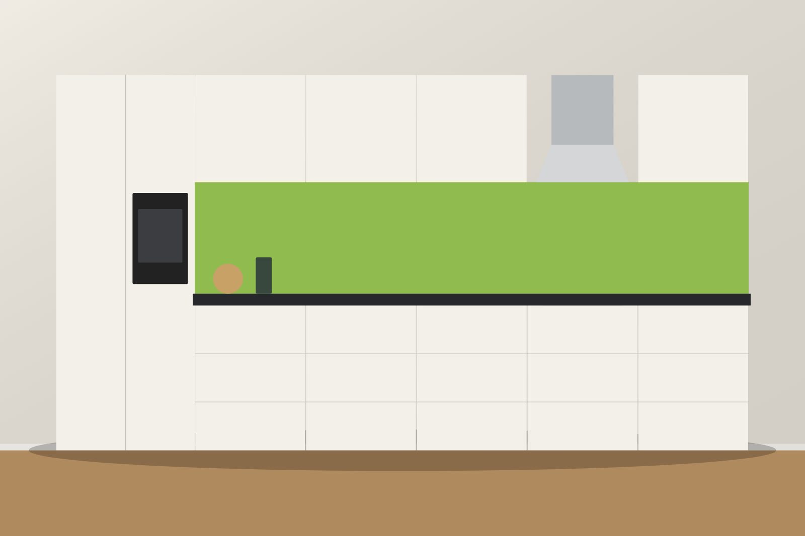

Auf Mass – nicht ab Stange.
Ein kleiner Einblick in unsere Arbeit: nach Mass und mit viel Herzblut kreiert. Klicken Sie auf ein Bild, um es gross anzusehen.

Küchen
Für genussvolleres Kochen und gemeinsame Zeit.
Die Küche bildet das Zentrum eines Wohnraums. Unsere Küchen bieten auch bei wenig Platz viel Stauraum und einladende Arbeitsflächen – mit markanten Kochinseln und Hochschränken mit intelligentem Innenleben. Wir beraten Sie bei Ihnen zu Hause, damit Ihre neue Küche perfekt passt.


Schränke & Innenausbau
Praktisch und stilvoll, Hand in Hand.
Egal ob Schränke, Regale, Simse, Garderoben oder Handläufe: Wir sorgen dafür, dass Sie auch bei wenig Platz die optimale Raumnutzung erreichen. Farben und Materialien stimmen wir harmonisch aufeinander ab.


Bad
Mit Spiegelschränken und Waschtischmöbeln zur Wohlfühloase.
Das Bad ist ein Rückzugsort. Ob ein komplettes Bad oder nur ein Unterschrank – gestalten Sie Ihr Bad nach Ihren Wünschen, mit praktischem Stauraum und viel Raum zum Entspannen.


Möbel
Möbel, die zum Verweilen einladen.
Sideboards und TV-Möbel mit viel Stauraum dank ausgeklügelter Schubladen, oder massgefertigte Tische, die zum sozialen Zentrum Ihres Zuhauses werden – jedes Stück mit Ihrer persönlichen Note.


Türen
Sicherheit und Schutz, verpackt in Ästhetik.
Unsere Türen schützen vor Lärm, Kälte, Feuer und Einbruch – ohne dass die Ästhetik zu kurz kommt. Ob Eingangs- oder Zimmertür, aus Holz oder mit Glasausschnitten für mehr Tageslicht: Entwerfen Sie Ihre Tür gemeinsam mit uns.


Katzengitter & Insektenschutz
Kreative Lösungen für Mensch und Tier.
Ob Dachfenster, Balkon oder Treppe: Wir passen die Konstruktion Ihrem Wohnraum an. Und vom einfachen Spannrahmen über Fensterrollos bis zum Insektenplissee finden wir das Passende, damit Sie die Sommerluft bei offenem Fenster geniessen können.


Komplette Projekte
Gewerbliche und öffentliche Bauten.
Wir liefern vom Konzept über die Fertigung bis zur Montage alles aus einer Hand – etwa den gesamten Innenausbau eines Fitnessstudios oder Bänke, Tische, Brandschutzmassnahmen und Verkaufstresen für die Gastronomie.


Ihr Projekt ist das nächste.
Fragen Sie uns nach den neusten Trends und Möglichkeiten – wir beraten Sie gerne persönlich.